Self-driving Car From An Engineering Perspective
Introduction
Introduction
The following are my personal opinions, if you have comments, questions or ideas, please feel free to send me Emails at cgliu2008 AT gmail.com
Introduction
People don't believe self-driving car is achievable argue that:
- A computer system is not reliable and safe enough.
- Bugs in software are inevitable.
- A malicious attack can always cause trouble.
- Collisions are inevitable.
- There are a lot of unsolved AI problems, for example, human intent prediction.
However, I deeply believe self-driving car is a achievable goal in reasonable near future, here is why and how.
Safety
How to Design A Safety Critical System
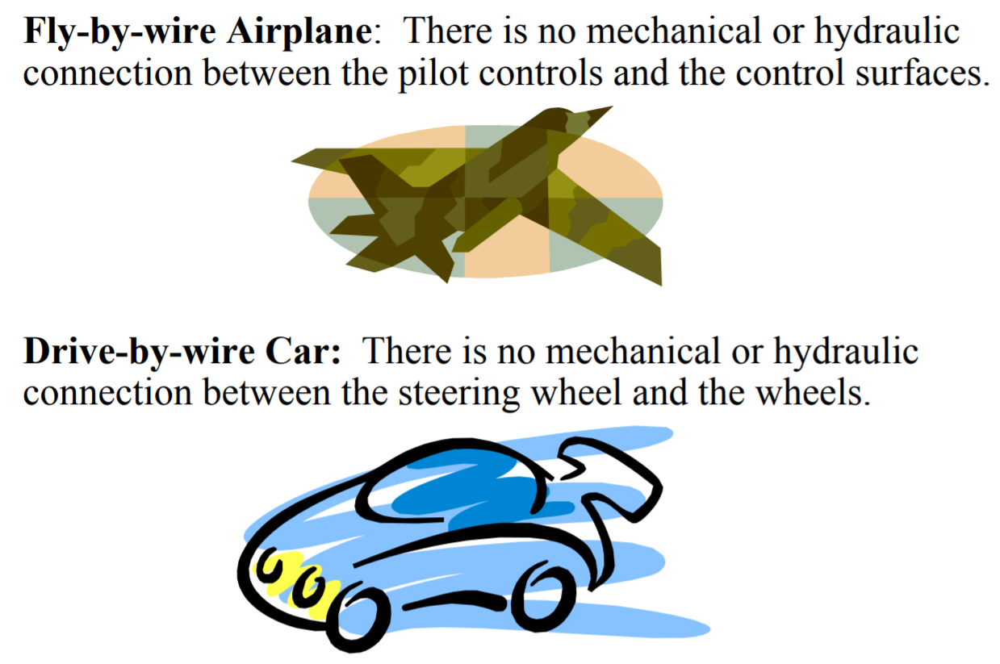
The \(10^{-9}\) Challenge 1
Critical system services must be more reliable than any one of the components: e.g., System Dependability 1 FIT–Component dependability 1000 FIT (1 FIT: 1 failure in \(10^9\) hours)
- Architecture must be distributed and support fault-tolerance to mask component failures.
- A system as a whole is not testable to the required level of dependability.
- The safety argument is based on a combination of experimental evidence about the expected failure modes and failures rates of fault-containment regions (FCR) and a formal dependability model that depicts the system structure from the point of view of dependability.
- Independence of the FCRs is a critical issue
Independence of FCRs
There are two basic mechanisms that compromise the independence of FCRs
- Missing fault isolation among the FCRs
- Error propagation–the consequences of a fault, the ensuing error, propagates to a healthy FCR by an erroneous message.
Integrated Architecture
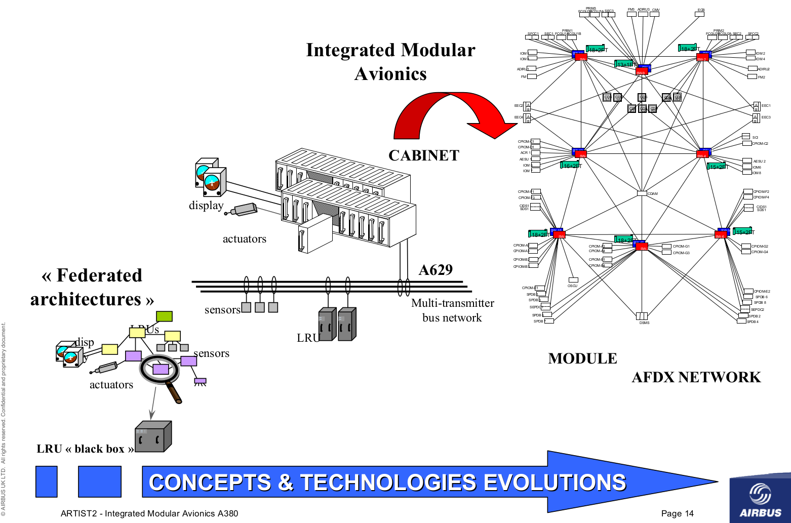
Safety Consideration for Integrated Architecture
A number of technical and economic advantages could be realized if the different DASes were integrated into a single architecture
- Cost savings by the reduction of nodes, sensors and wiring points (results also in an increase in hardware reliability).
- Better integration of functions–more flexibility
Implementation of fault tolerance simplified
But
- Independence of individual DAS compromised–increased potential of error propagation from one DAS to another DAS
- Integration increases complexity and diagnostics
- Allocation of responsibility more difficult
Platform Safety
DO-297 Integrated Modular Avionics (IMA) Development Guidance and Certification Considerations
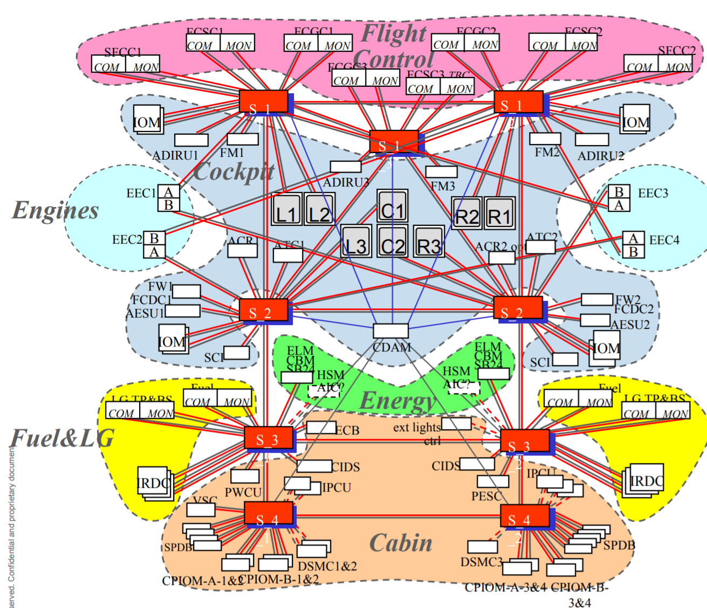
Figure 3: A380 Integrated Modular Avionics (IMA) system
Platform Safety - OS
- Operating System ARINC 653 (Avionics Application Standard Software Interface) a software specification for space and time partitioning in safety-critical avionics real-time operating systems (RTOS).
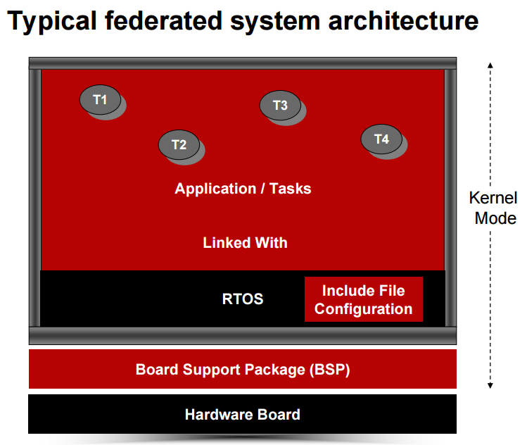
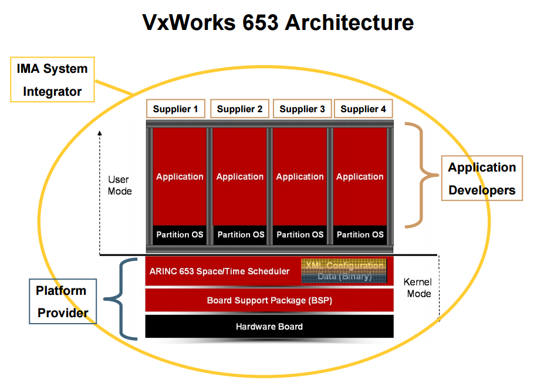
Platform Safety - Network
- AFDX Avionics Full-Duplex Switched Ethernet (AFDX)
- ARINC 664
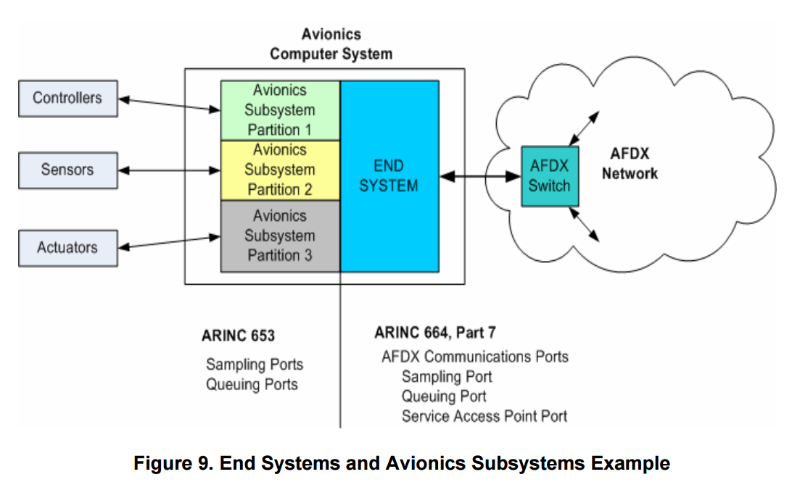
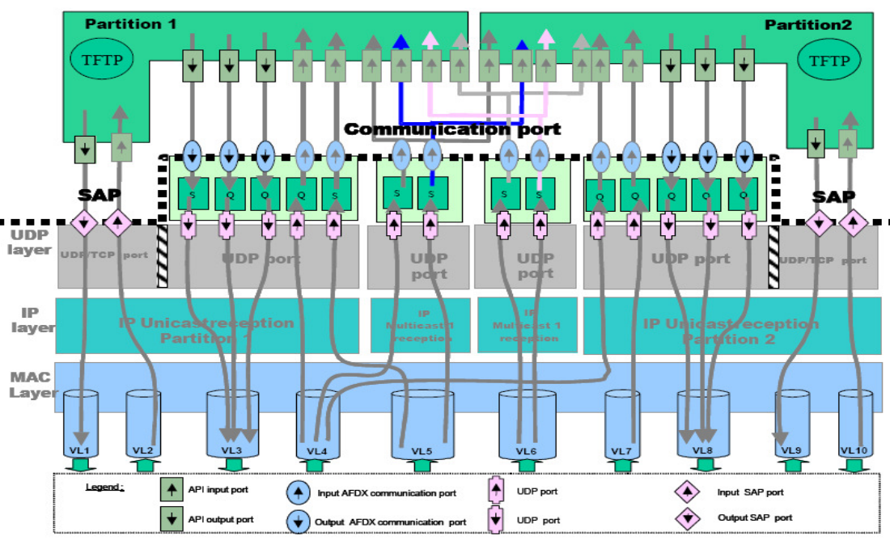
Platform Safety - Software
Software DO-178B, Software Considerations in Airborne Systems and Equipment Certification
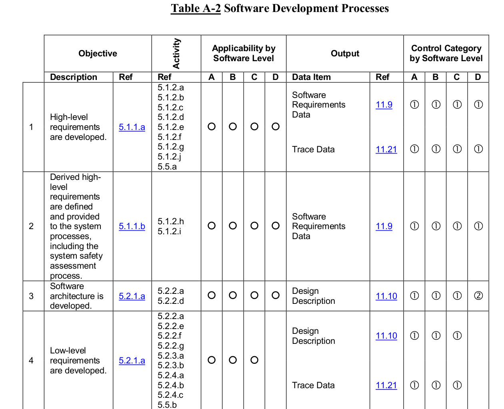
Figure 4: DO-178B Software Development Processes Objectives
Platform Safety - Hardware
DO-254, Design Assurance Guidance For Airborne Electronic Hardware
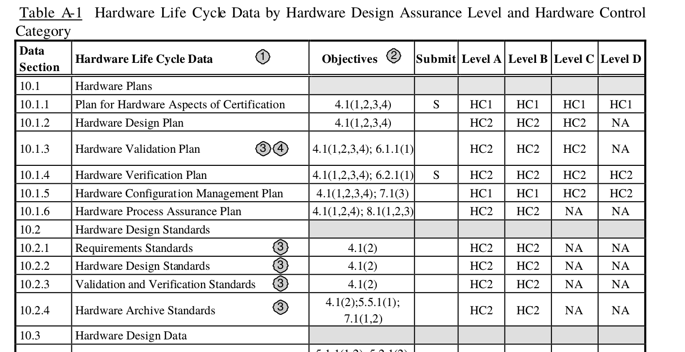
Figure 5: DO-254 Hardware Control Category
Integrated Modular Self-driving System
- Partitioning system, the performance of each system must be unaffected by any other
- To allow systems to be developed, tested and verified separately
- To allow system faults to be contained
- To allow new systems to be added post certification
- For self-driving platform, we need to have partitioned computing, communication, and interface resources.
Safety can't be achieved by testing, but by a careful plan, design, implementation, and validation and verification process.
For self-driving cars, it is impractical to follow the same process as what in Aviation for now. But a minimal system engineering effort is still required, which will save money and time.
AI or Not
What are we trying to solve?
Driver-less has already been achieved during the DARPA Robotics Challenges!
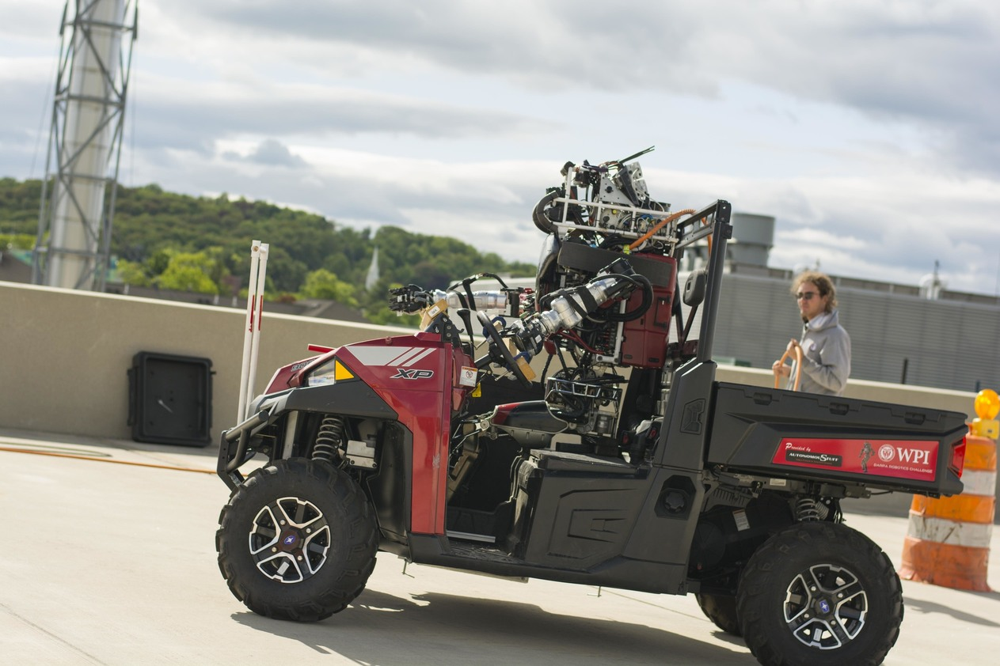
What are we trying to solve?
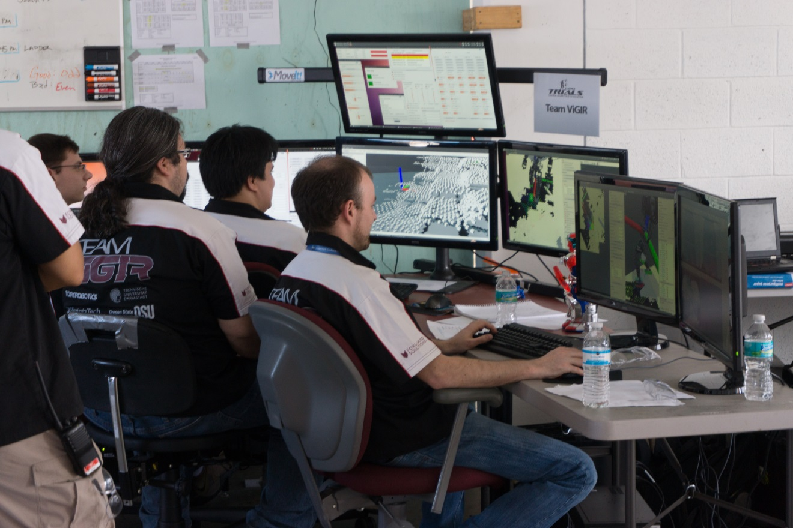
What are we trying to solve?
- Autonomous \(\ne\) Driver-less
- 'AI problems are problems that haven't been solved yet'.
- Self-driving problem is not an 'AI' problem
Machine learning methods are good ways to improve performance, but be careful when you decide to use it. They are promising but not magic and the non-interpretative issues with the black-box learning approaches may trap us before achieving acceptable performance. Pure data-driven approaches are expensive and hard to deliver on time.
What are we trying to solve?
The system design should minimize open 'AI' problems!
What are we trying to solve?
How to minimize open AI problems?
- Limit scope by simplifying scenarios and operational conditions
- Use as much prior knowledge in the maps as possible
- Minimize system perception-reaction latency and take advantage of feedback control. The faster the system can respond to the dynamic environment, the less challenging are the AI problems.
- Have humans in the loop to solve the most challenging AI problem
- Take uncertainties into account during motion planning (robust motion planning)
System Design Consideration
Lesson Learned from the DARPA Robotics Challenge
Lesson learned from the egress task
What makes a system fragile?
- 'Perfectness' assumption. Design a motion planning system assuming that the perception and the prediction system are 'perfect'.
- A death trap
- To improve the perception system, it runs slower.
- To improve the prediction system, it runs slower.
- Because the system runs slower, the motion planning requires a better perception and prediction systems.
- Handle failure cases separately, case by case. The final system is not consistent.
Self-driving Architecture
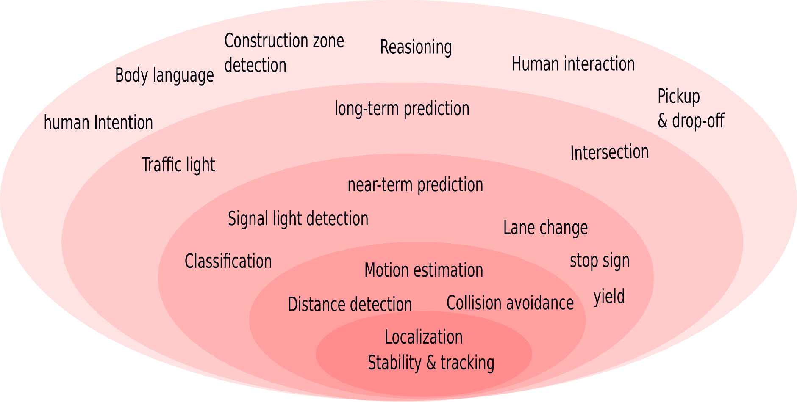
Self-driving Architecture
- Each module shall be self-contained and fully functional.
- Each module can be tested, independently.
- The system shall be developed inside-out, not the opposite.
- The response time shall decrease towards the kernel.
- The inner high speed loops are critical to the system robustness.
- The outer modules are important to the system performance (e.g. drive speed) and capabilities (e.g. scenario handling).
Self-driving Architecture
The goal is not a sum of perfect subsystems, but a harmonious system whose parts are consistent with each other!
Performance goals
When we design a self-driving system, We should consider the system as a whole and optimize its components all altogether.
The following formula show the connects between perception, localization, prediction, and planning systems 2:
\[ \mathrm{clearance} = v_0 \tau + \frac{v_0^2}{2 a} + 2 \sqrt{\sigma_{p}^2(0) + T^2 \sigma_v^2(0)} \]
Divide and conquer, but don't design separately and try to achieve unrealistic goals!
Motion Planning Design Consideration
Motion planning system design consideration
- One major reason for self-driving car becoming a realistic goal is that the perception algorithm and systems make a lot of progress in recent years. Compared with the perception system, the motion planning system seems more mature. You probably think it is a solved problem.
- Yes, if we can get the ground truth information in the future and we have enough time to do planning. However, we can never get the ground truth information in the future and we have to handle the real-time performance issue in practice.
- Therefore, motion planning is NOT a solved problem (exiting!).
The perception system will never be perfect and we can never predict the future. We have to design a motion planning system based on this fact.
How to drive if collisions are inevitable?
- Yes. according to the analysis 2, there is always a risk of collision as long as the vehicle moves.
- However:
- The self-driving car is not responsible for all collisions, for example, collisions by others' faults.
- And the collision severity levels are different.
Therefore, the design goal is not to avoid all kinds of collisions but to avoid collision in a reasonable way and show due care to inevitable collisions or collisions caused by others' faults.
Motion planning system design consideration
Motion planning system's functionalities:
- Navigation: travel from A to B:
- Guidance: obey traffic law
- Control: avoid collisions
Optimization-based motion planning
- Rather than designing control policy or rules, the developers design cost functions and then let optimization
algorithms figure out the best policy
- Pros:
- More direct
- Easy to get the system to work
- Make it possible to build a harmonious system
- Compatible with Reinforcement Learning framework
- Better performance
- Cons
- Hard to find a good cost function
- Real-time performance issues
- Robustness issues
- Pros:
Driving problem formulation
The objectives:
- Minimize the time to the destination
- Minimize the risk of collision
- Maximize ride quality
Subject to:
- Dynamics constraints
- Path, control, and other temporal constraints
The risk of collision
\[ \mathrm{risk} = \mathrm{severity} \times \mathrm{exposure} \times \mathrm{probability} \]
The expectation of collision risk: \[ \mathrm{E}(\mathrm{risk}) = \int_0^t \mathrm{severity}(\tau) p(\tau) d\tau \]
The risk of collision

The collision probability: \[ p(t) \approx \int_{S} p_{av}(x, y|t)p_{obs}(x, y|t) dxdy \]
The risk of collision
The severity level at urban drive speed (< 50 mph): \[ \mathrm{severity} \propto v \]
Therefore, \[ E(risk) \approx \int_{0}^t \int_{S} v(\tau) p_{av}(x, y|\tau)p_{obs}(x, y|\tau) dxdy d\tau \]
Optimal problem formulation
\[ U = \arg \min_{u(\cdot)} \big \{ \mathcal{L}_f(x, u, t_f) + \int_{t_0}^{t_f} \mathcal{L}(x, u, t) dt \big \} \]
and subject to: \[ x(0) = x_0 \] \[ h(x,u) \le 0 \] \[ \mathrm{E}(\mathrm{risk}) \le \mathrm{risk\_level} \]
The cost functions should take the collision risk, ride quality, the desired driving path and other constraints into account.
Optimization-based motion planning
- Navigation (long-range)
- Ignore dynamic obstacles
- Low resolution, such as at lane level
- spatial and temporal constraints, e.g. time-based lane
- Methods: A*, D*, PRM, and etc.
- Decision making (long-range and long-term)
- Simple model, low quality, long-term
- Method: Dynamic Programming
- Trajectory optimization (mid-range and mid-term)
- Full model, high quality, mid-term
- Methods: DDP, iLQR, Direct collocation, Pseudospectral methods, or spline + differential fatness.
- Control
- Full-model, high quality, short-term
- Method: Finite-horizon LQR, LQR gain scheduling, QP, ADRC and etc.
Optimization-based motion planning
- Harmony
- The cost functions shall be consistent with each other for each level
- Cost functions
- Manually designed based on domain knowledge
- Real-time performance
- Cache cost and avoid duplicate computation
- Hessian matrix approximation,
- Parallelism (e.g. multiple shooting)
- Robustness
- Warm-start generation
- Multiple shooting
From Excellent to Superb
- Cost function
- Learning from imitation (Inverse Reinforcement Learning)
- Maximum Margin Planning
- Maximum Entropy Inverse Reinforcement Learning
- Trial and error (Reinforcement Learning, e.g. trajectory-based Reinforcement Learning 3).
- Learning from imitation (Inverse Reinforcement Learning)
- Real-time performance
Summary
Summary
- System design shall avoid or reduce AI problems
- System development should follow a similar path as the natural evolution.
- Hierarchical optimization architecture is an efficient way to handle real-time performance issues
- High-speed feedback control is one of the mast efficient ways to improve system robustness.
- Evaluate system safety as a risk probability and design for it
- The motion planning system design should take the uncertainty into account.
Footnotes:
From a federated to an integrated architecture for dependable embedded systems, H. Kopetz, TU Wien, September 2004
Trajectory-based dynamic programming
Standing balance control using a trajectory library
Biped walking control using offline and online optimization
Optimization-based Full Body Control for the DARPA Robotics Challenge
Full-body motion planning and control for the car egress task of the DARPA robotics challenge
Biped walking control using a trajectory library